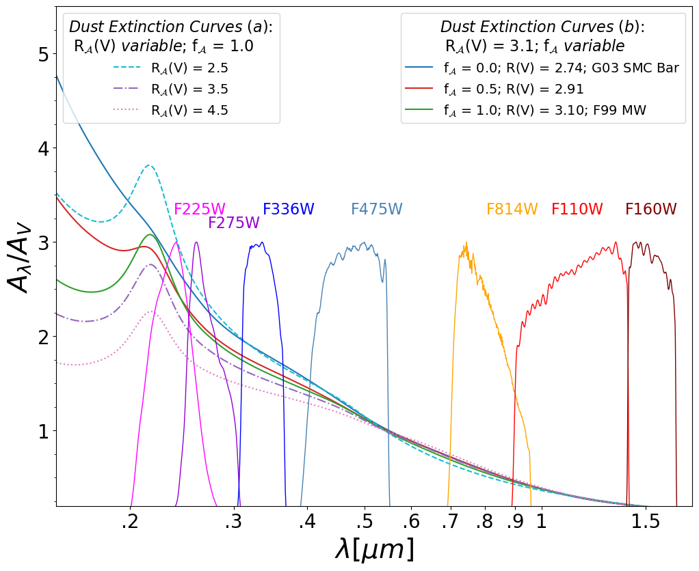
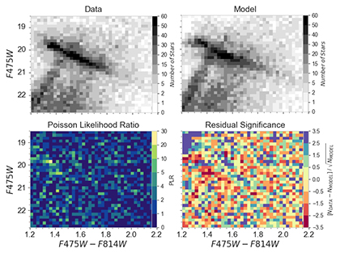
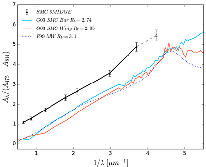

I am interested in understanding the properties of the interstellar medium (ISM) in nearby
galaxies. The ISM, comprised of interstellar dust and gas, and its properties on small
and large scales govern galaxy formation and evolution. The Small and Large Magellanic
Clouds (SMC & LMC), as well as M31 and M33, are excellent laboratories for
observing spatially resolved stellar populations and individual gas/dust clouds enabling
a detailed analysis of the ISM and stellar properties. I study the ISM via dust
extinction and dust emission, by measuring the dust extinction curve, making dust maps,
and comparing dust properties with properties of other components of the ISM. I also
study how stellar populations behave as an ensemble and how they interact with the
nearby dust and gas.

The Mysterious 2175Å Bump
With recent HST/STIS spectroscopic observations (PI P. Yanchulova MJ),
we try to understand why most extinction curves in the SMC lack the
ubiquitos 2175Å UV absorption feature seen in the
Milky Way and in Local Group galaxies. What physical conditions affect
this and other extinction curve features, such as the far-UV rise? The SMC
is key to studying such variations due to its proximity and unusual ISM
environemnt. We observe the spectra of sightlines with a high probability
of a 2175Å bump, and correlate dust extinction properties with
the ISM environment.
Yanchulova M-J et al. in prep (2025), ApJ

Dust + Stellar Properties
The wealth of information contained in photometric surveys of resolved stars
in nearby galaxies - such as Scylla
(PI C. Murray )
and SMIDGE (PI K. Sandstrom) - makes it possible to model the stellar and dust properties together.
The BEAST
tool enables high resolution mapping of stellar and dust properties
by fitting the individual stellar photometry to a stellar physics model
and models for the dust extinction and observational uncertainties.
Additionally, the chemical enrichment and star formation histories can be
studied in great detail.
Yanchulova M-J et al. 2025, ApJ

Observations of spatially-resolved stellar populations make it possible to
analyze the 3-D structure of the stars, dust, and gas. My thesis focused on
modeling the effects of dust extinction and galactic geometry (stellar and
dust layer positions and relative offsets) on the CMD of stars in the SW
Bar of the SMC. We found that when CMDs are used to study dust extinction in
nearby galaxies, the stellar and dust geometry must be modeled as well to
properly infer the dust properties.
Yanchulova M-J et al. 2021, ApJ

Color-magnitude diagrams (CMDs) of reddened stars can provide rich
information about dust extinction properties of nearby galaxies. I use CMDs
to study dust extinction as a way to constrain dust grain properties. My
research has made use of Hubble Space Telescope observations of resolved
stars in the SMC to understand how the dust extinction curve at
low-metallicity may be different from that in evolved galaxies.
[SMIDGE, PI K. Sandstrom]
Yanchulova M-J et al. 2017, ApJ